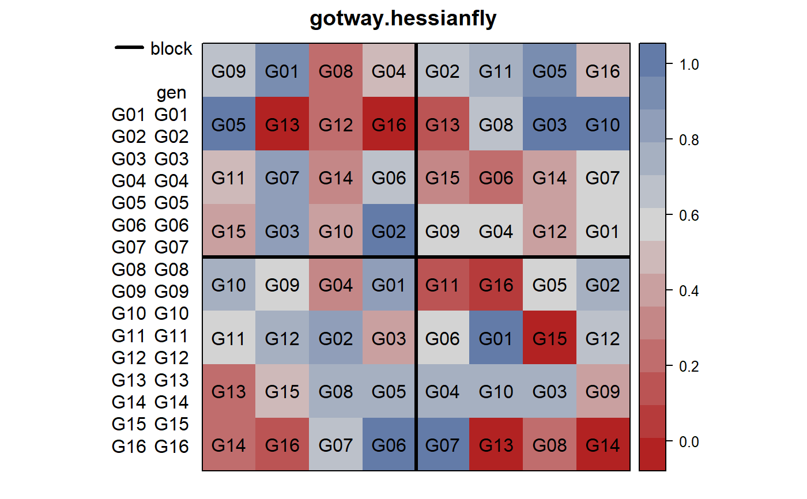

gotway.hessianfly.RdHessian fly damage to wheat varieties
blockblock factor, 4 levels
genotype factor, 16 wheat varietieslatlatitude, numeric
longlongitude, numeric
ynumber of damaged plants
nnumber of total plants
The response is binomial.
Each plot was square.
C. A. Gotway and W. W. Stroup. A Generalized Linear Model Approach to Spatial Data Analysis and Prediction Journal of Agricultural, Biological, and Environmental Statistics, 2, 157-178.
http://doi.org/10.2307/1400401
The GLIMMIX procedure. http://www.ats.ucla.edu/stat/SAS/glimmix.pdf
library(agridat) data(gotway.hessianfly) dat <- gotway.hessianfly dat$prop <- dat$y / dat$n libs(desplot) desplot(prop~long*lat, dat, aspect=1, # true aspect out1=block, text=gen, cex=1, shorten='no', main="gotway.hessianfly")# ---------------------------------------------------------------------------- # spaMM package example # libs(spaMM) # m1 = HLCor(cbind(y, n-y) ~ 1 + gen + (1|block) + Matern(1|long+lat), # data=dat, family=binomial(), ranPars=list(nu=0.5, rho=1/.7)) # summary(m1) # fixef(m1) # filled.mapMM(m1) # ---------------------------------------------------------------------------- # Block random. See Glimmix manual, output 1.18. # Note: (Different parameterization) # libs(lme4) # l2 <- glmer(cbind(y, n-y) ~ gen + (1|block), data=dat, family=binomial, # control=glmerControl(check.nlev.gtr.1="ignore")) # coef(l2) # ---------------------------------------------------------------------------- if(0){ # asreml3 # libs(asreml) # a2 <- asreml(prop ~ gen, data=dat, random=~block, # family=asreml.binomial(), # weights=n) # coef(a2) } # ---------------------------------------------------------------------------- if(0){ ## libs(asreml4) ## a2 <- asreml(prop ~ gen, data=dat, random=~block, ## family=asr_binomial(), ## weights=n) ## coef(a2) }